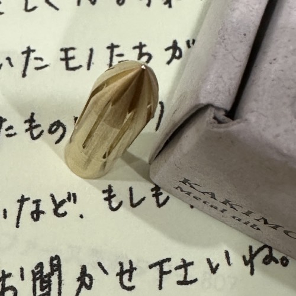
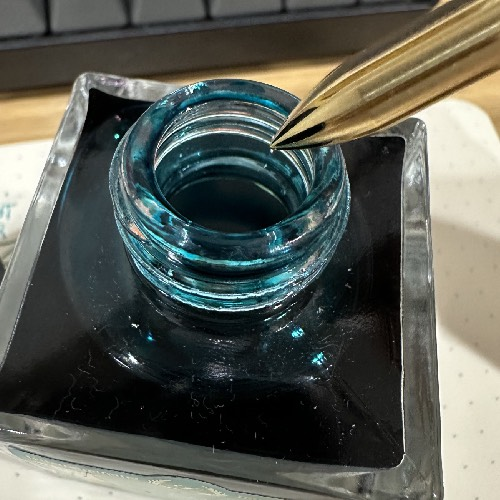
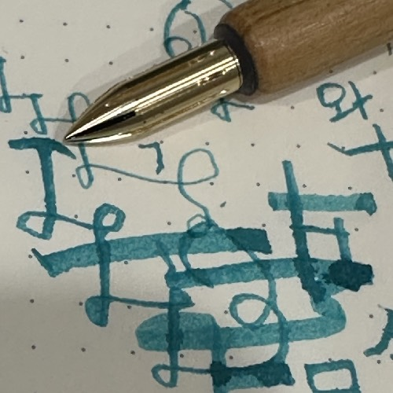

운이라는걸 많이 믿는편은 아니지만, 확실히 재미있는것도 없고 뭔가 열심히 해도 잘 안되고
어쨋든 그럴때가 있다. 생각보다 꽤 길었던거 같긴한데,
나름대로 뭔가 이거저거 하면서 많이 다니긴했지.

어디선가 우연히 이 딥펜을 봤는데, 아 오랫만에 잊고있던 만년필에 흥미를 불러일으키는 신기한 녀석

꽃봉우리처럼 생기기도 한 이것은 심지어 딥펜임.

두꺼운 선, 얇은선 편하게 그을 수 있고, 뭔가 선 굵기를 조절할 수 있어서
그림을 그리거나, 한문을 쓰거나, 멋부리는 필체로 글을 쓰는것같이
붓의 효과를 노려볼 수 있을것 같아서, 굉장히 흥미롭다.